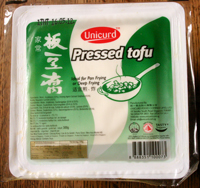

Le tofu est peut-être le succédané de viande le plus connu. Il est même devenu une sorte de symbole du végétarisme. Force est cependant de constater qu'il est également pour beaucoup un sujet de risée et que finalement très peu l'apprécient à sa juste valeur.
Qu'est-ce que le tofu, déjà? Bien qu'il en existe de très nombreuses sortes (ferme, soyeux, fumé, épicé, etc.), le tofu est toujours obtenu à partir de la coagulation du lait de soja. Le lait de soja est obtenu à partir de graines de soja trempées, moulues et bouillies. A ce "jus" filtré, on ajoute des coagulants (il en existe différents types) afin d'obtenir cette texture ferme. On n'est pas très loin de la méthode de fabrication du fromage. Ce qui vaut parfois au tofu l'appellation de "fromage de soja".
Mais si le tofu ressemble en effet à un fromage - et c'est parfois dans ce rayon qu'il faut le chercher en supermarché - son utilisation en diffère beaucoup. Au naturel, le tofu est résolument fade. La mozzarella, à côté, c'est du camembert affiné au calvados! Il faut donc préparer le tofu. Nombreuses sont les personnes qui l'ont goûté tel quel et se sont juré de ne plus jamais y retoucher. Mais une fois préparé, il se révèle être un précieux allié pour une cuisine relevée, saine et variée.
Le tofu ferme (nature, fumé ou épicé) peut se manger cru, ajouté aux salades par exemple. Il importera alors de veiller à épicer suffisamment la salade afin de donner du goût au tofu. Il peut également s'ajouter aux soupes où à de nombreuses autres préparations. Le mieux cependant, est de le consommer mariné puis cuit.
Le tofu soyeux est différent. Il a plus la texture d'un yaourt et s'employera comme tel. Il peut ainsi servir de base pour des dressings mais également donner de la consistance à des plats plus élaborés. Entre le soyeux et le ferme, il existe encore toute une gamme de texture qui entrent dans la préparation d'autant de plats, souvent d'origine asiatique.
Lors de l'achat, il importe donc de veiller au type de tofu choisi afin de ne pas avoir de surprise. Enfin, vu l'explosion de cultures OGM de tofu, ainsi que sa production à grande échelle dans des pays pas toujours respectueux des législations relatives aux engrais et pesticides, le tofu bio sera toujours préféré à un autre.